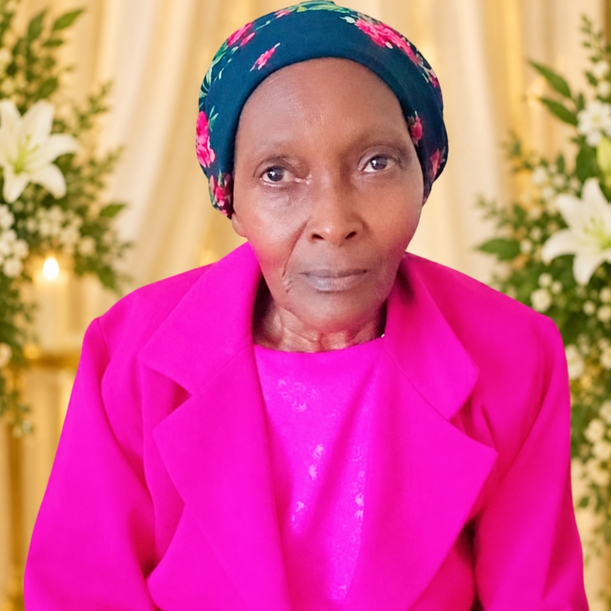

A motherly heart
She made people feel seen and understood. That kind of love becomes a shelter the heart can return to long after goodbye.
A life remembered · a faith that remains
THE LATE · IN LOVING MEMORY OF
Lovingly known as Wa Ruth
More than a grandmother. A motherly heart, a listening ear, and a woman whose prayers helped plant faith, hope and courage.
“The Lord is close to the brokenhearted.”PSALM 34:18

A love that stays beyond goodbye.
A LEGACY OF LOVE & FAITHWith love, we remember
This is a place for the people who miss her: to say her name with tenderness, return to the moments they treasure, and remember the faith, courage and hope she helped plant. Some losses change the shape of our days; a love like hers remains part of who we are.
To her family and the people who knew her, Hannah was more than a grandmother. She was a beloved elder with a motherly heart, remembered for listening, encouraging, praying, and helping others feel less alone. Every relative and friend carries a different part of her story; together, those memories honour the many ways her life touched others.
Her story lives in the things we still carry: the prayers she prayed, the encouragement we remember, the love that made us feel understood, and the faith she helped plant in our hearts. We cannot return to yesterday, but we can honour what she placed within us.
Discover her storyWhat her life continues to give
The most lasting gifts are often the ones we carry inside us.
She made people feel seen and understood. That kind of love becomes a shelter the heart can return to long after goodbye.
She helped plant a faith that can still be held in the hardest season. Her prayers and example remain part of the hope she gave.
Every act of kindness, every prayer and every brave next step can help carry her love forward.
Words of remembrance
“Some people teach us how to keep going; we carry their love into every step that follows.”A REFLECTION IN HER MEMORY
The eulogy
Wa Ruth, your absence is deeply felt by all who loved you. Your prayers, kindness, and encouragement helped people through difficult seasons, and the faith you shared continues to offer hope. Though we cannot gather with you again in the same way, we can keep saying thank you, honour your memory, and carry forward the good you planted in our family and community.
The full eulogy brings these reflections together in a loving tribute to her life, faith, family and enduring legacy.
Read the full eulogyA FAMILY TRIBUTE OF LOVE AND GRATITUDE
You were a beloved grandmother whose care reached across our family and community. You listened, encouraged, prayed, and helped people feel less alone. Each of us holds different memories of you, and every one of those memories belongs in this shared tribute.
Through your faith, prayers, and example, you helped point people toward God and nurtured faith, hope, and courage. We wish we could sit with you again, hear your voice, share our news, and thank you for the small acts of love we understand even more deeply now. We cannot bring yesterday back, but we can honour your life by supporting one another and passing your kindness to the next generation.
We cannot bring yesterday back, but we can carry your love into tomorrow. We can keep praying, choose courage, encourage one another, and remember the faith you helped plant. When life feels heavy, your example can remind us to take one more step together.
“Your voice may be quiet now, but the faith and love you shared continue to speak through all of us.”
We miss you. We thank God for your life. We love you, Wa Ruth. We will keep your memory alive.
Keep her memory close
Each part of this memorial holds space for a different way of remembering.
A heartfelt tribute to her life, love and faith.
Read the tribute →Return to the life and person behind the name.
Remember her life →Honour the love, lessons and meaning she leaves behind.
Explore memories →A place for family-approved photographs and treasured moments.
Visit the gallery →Scripture, prayer and words for days when grief feels heavy.
Find comfort →Prepare a personal message to honour her memory and share it with family.
Write a tribute →“The Lord is close to the brokenhearted and saves those who are crushed in spirit.”
PSALM 34:18
Faith does not ask us to stop missing her. It gives us somewhere to take the tears, and someone to lean on when our own strength runs low.
Continue to faith & prayerA quiet moment of remembrance
Pause for a moment. Remember her face, whisper her name, thank God for the time you had, or simply sit with the love and the ache. You do not have to find the perfect words.
Your candle is remembered in this browser only.